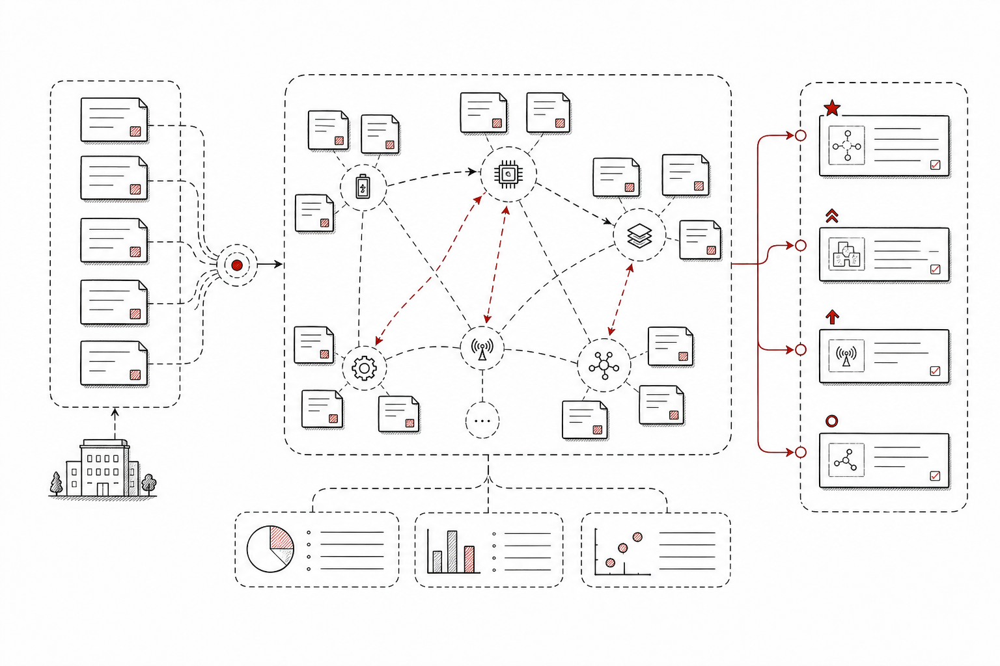
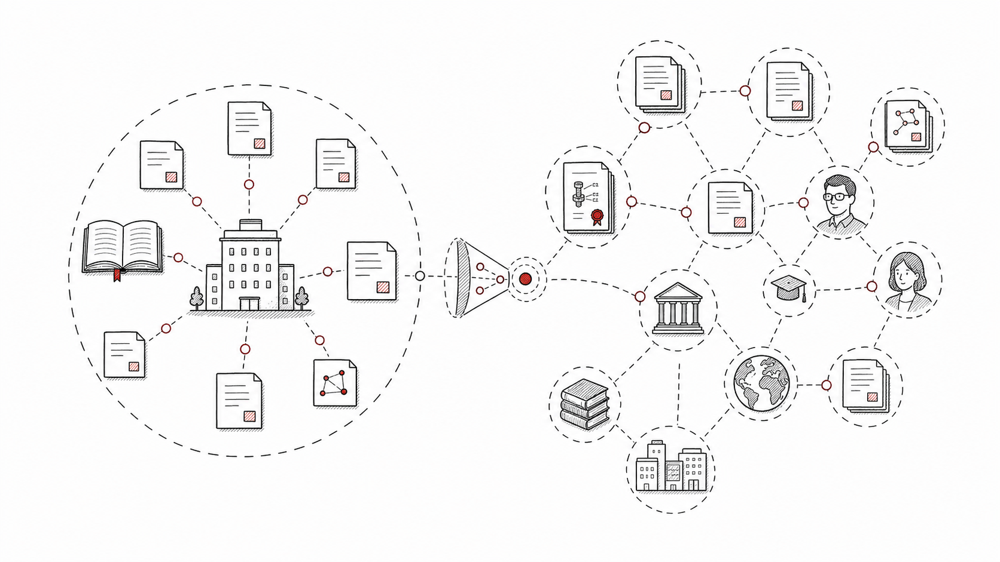
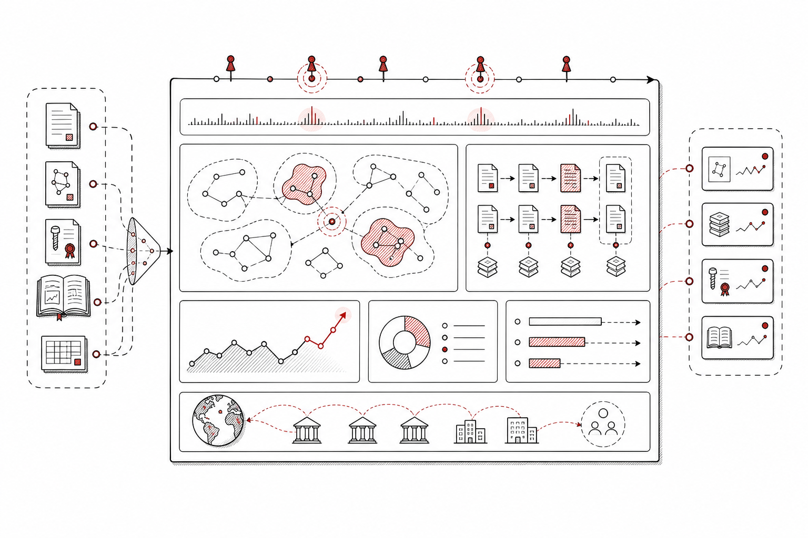
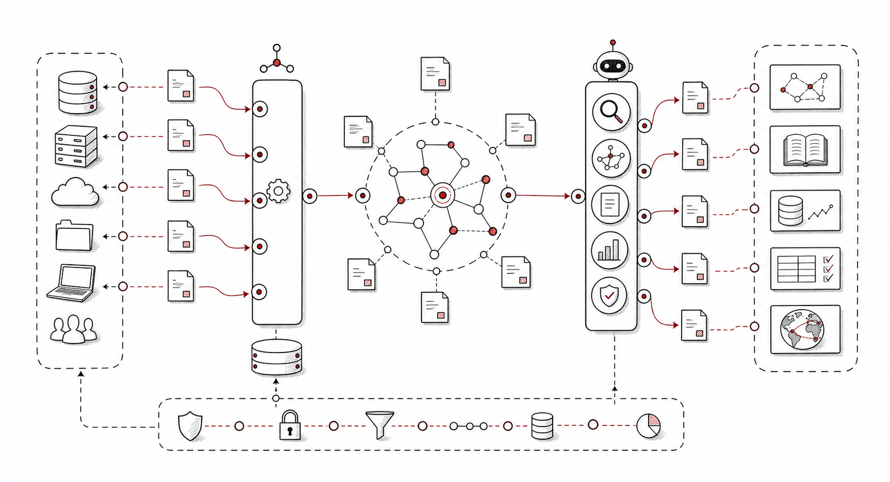

输入
企业项目、产品方向、客户需求、技术路线、竞品清单，以及内部知识库或业务系统中的主题标签。
SciBase 面向企业研发、投研、咨询、知识产权和技术情报团队，将内部项目、产品线与客户需求链接到全球论文、专利、作者、机构、公司和主题演化。

这个场景的关键是把企业已有的研发对象转成可持续维护的知识资产，让外部论文、专利和机构动态为内部决策服务。
企业项目、产品方向、客户需求、技术路线、竞品清单，以及内部知识库或业务系统中的主题标签。
抽取企业主题，链接论文、专利、作者、机构和公司，并持续监控主题变化与新证据。
技术画像、知识图谱补全、竞品与机构监控、主题 watch，以及可集成到企业系统的 API 结果。
每个方向都面向真实企业工作流：从主题建模，到外部 enrichment，再到监控和系统集成。

将企业项目、产品线和客户需求整理成稳定主题，统一同义词、技术层级和关注范围，形成后续检索与监控的锚点。

围绕企业主题链接全球论文、专利、作者、机构和公司，把外部知识补充到内部项目、客户画像和研发路线中。

对重点主题、竞品、机构和专家建立 watch，持续发现新增论文、专利、合作关系和主题变化，支持周报、月报和预警。

通过基础 API 和 Agent-native API 将外部知识结果接入企业知识库、CRM、研发管理系统或内部智能体工作流。
企业场景强调持续服务和系统集成，另外两个页面分别聚焦 Agent 研究能力和技术查新判断。